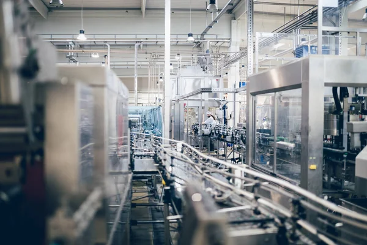

Transformación Industrial hacia la Eficiencia Operativa
En el entorno manufacturero actual, especialmente en el sector de la transformación de plásticos, la gestión eficiente de los procesos no es un lujo, sino una necesidad de supervivencia. Las empresas enfrentan retos diarios como el desperdicio de materia prima, la ineficiencia de las máquinas y los retrasos en las entregas, los cuales impactan directamente en la rentabilidad y la satisfacción del cliente.
Este portal educativo ha sido diseñado para presentar un diagnóstico técnico y un conjunto de soluciones basadas en la Ingeniería Industrial. A través de metodologías probadas, demostraremos cómo mitigar los tiempos muertos, controlar la variabilidad de la calidad y optimizar el flujo logístico para convertir una planta tradicional en un modelo de producción inteligente.

Conoce las áreas de la Ingeniería Industrial
Gestión de la Producción
Planificación de recursos, secuenciación de órdenes de trabajo y balanceo de líneas para evitar cuellos de botella.
Gestión y Control de Calidad
Uso de herramientas estadísticas para asegurar que los productos plásticos cumplan con las especificaciones técnicas.
Logística e Inventarios
Estrategias de almacenamiento y cálculo de puntos de pedido para eliminar el exceso de stock y la falta de materiales.
Lean Manufacturing
Filosofía enfocada en la eliminación drástica de desperdicios y la implementación de las 5S en el piso de venta.
Mantenimiento Industrial
Modelos preventivos y predictivos para asegurar la máxima disponibilidad de las inyectoras y extrusoras.
Productividad e Indicadores
Medición del desempeño de la planta mediante el indicador OEE y análisis del tiempo de ciclo.